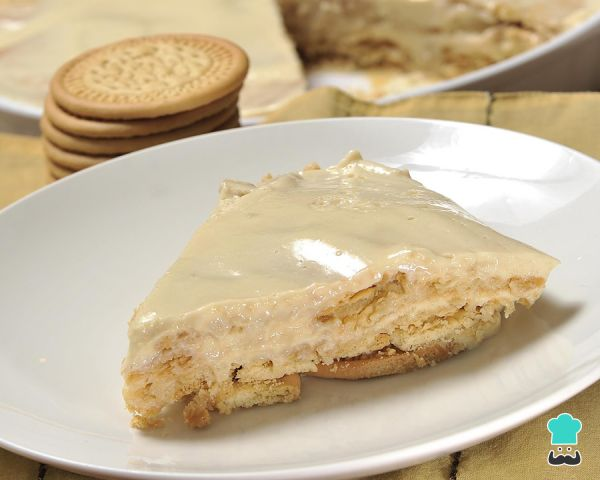

Otra receta de Carlota
| Contenido de la receta
| Ingredientes
| Preparación
| Información Nutricional
Receta de Carlota de limón

Contenido
Aprende a preparar una deliciosa Carlota de limón y sorprende con un postre casero fácil y rápido. Te ofrecemos una receta de Carlota de limón paso a paso para hacerla sin complicaciones.
La carlota de limón es un postre de origen francés que ha adoptado múltiples formas de elaboración, así como distintos sabores, como de manzana o de fresa. Sin embargo, todas ellas se forman a base de capas alternadas de crema y pequeños bizcochos, u otro tipo de producto de repostería sólido. En RecetasGratis.net queremos enseñarte una receta muy sencilla y deliciosa para que puedas elaborar tu propia carlota, ¿quieres conocerla? Sigue leyendo y descubre los pasos para realizar nuestra carlota de limón fácil.
Ingredientes
- 8 Limones medianos
- 1 Lata de Leche evaporada (381 ml)
- ½ Lata de Leche condensada (200 g)
- 1 Lata de Media crema (225 g)
- 2 Paquetes de Galletas María (400 Gramos)
- 2 Cucharaditas de Canela en polvo
Preparación
- Para elaborar esta carlota necesitarás exprimir los ocho limones para extraer su jugo. Hecho esto, vierte en el mismo recipiente donde tienes el zumo de limón la leche evaporada, la leche condensada, la media crema y mézclalo bien. Si dispones de licuadora te aconsejamos que la utilices, si no tienes puedes utilizar una cuchara o espátula. Puedes preparar una carlota de limón Nestlé, empleando los productos de esta marca, o hacerla 100% casera elaborando tú mismo la leche condensada, la leche evaporada o la media crema siguiendo nuestras recetas.
- Deberás remover hasta que la mezcla se torne una crema espesa. Luego, tendrás que elaborar las capas de la carlota de limón. Para ello, coge un molde refractario, coloca la primera capa de galletas María y vierte sobre ellas un poco de crema. Después, incorpora una segunda capa de galletas sobre la crema y, de nuevo, vuelve a verter un poco de mezcla, y así hasta finalizarla. Lo ideal es que la última capa esté compuesta por la mezcla de leches y jugo de limón.
- Cuando tengas todas las capas de la carlota de limón con galletas María, deberás introducirla en el congelador durante 30 minutos como mínimo para que cuaje. Este es un postre que se sirve bien frío, por lo que puedes reservarla en el congelador hasta el momento de comerla.
- Antes de servir la carlota de limón espolvorea canela al gusto a modo de decoración. Para presentarla, te aconsejamos que cortes pequeñas tartas individuales con la ayuda de un molde y coloques la cáscara de uno de los limones en forma de rosa.
Y si te han quedado dudas sobre la preparación de esta receta de carlota de limón y galletas María, puedes visitar la receta de marquesa de limón con fotos en el paso a paso, ¡está igual de deliciosa!
| Información |
Valor nuticional |
| Kilojulios |
820 kj |
| Calorías |
196 kcal |
| Proteína |
1,12 g |
| Carbohidrato - 36,53 g |
Fibra - 0,1 g |
| Azúcar - 34,23 g |
| Grasa totales - 5,54 g |
Grasa Saturada - 1,112 g |
| Grasa Poliinsaturada - 1,559 g |
| Grasa Monoinsaturada - 2,521 g |
| Colesterol |
31 mg |
| Sodio |
74 mg |
| Potasio |
18 mg |
| * Por porción |